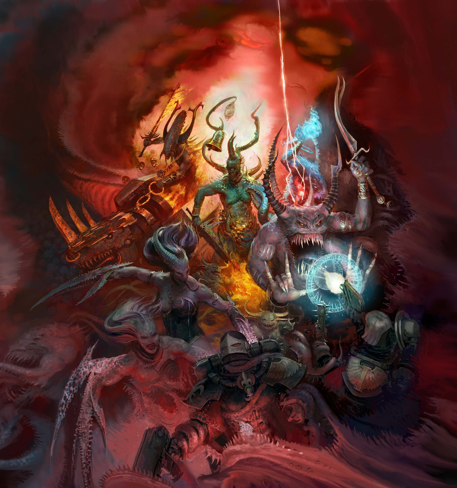
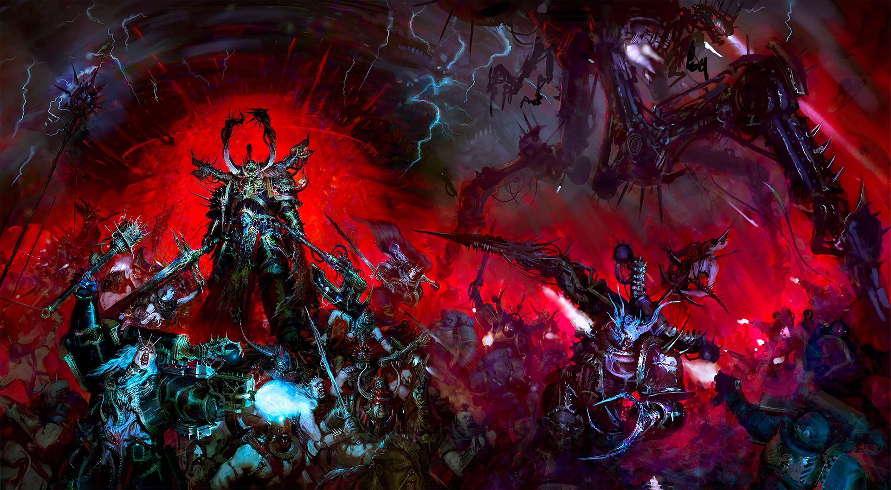
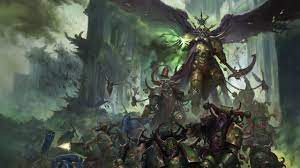
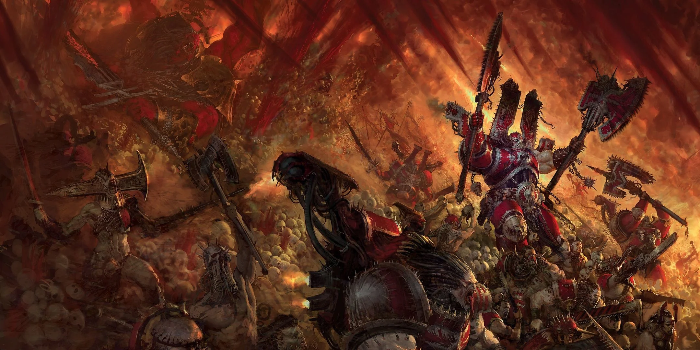
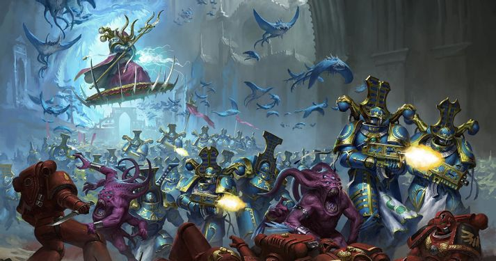

Forces of Chaos
Overview
The Forces of Chaos are considered to be the greatest threat to the material universe. Residing within the warp, chaos embodies nature and emotion in various ways. Daemons call the warp home, but Chaos is ruled by four beings, or gods. To be brief, the four chaos gods are Khorne, Tzeentch, Nurgle, and Slaanesh. Each representing an emotion, force of nature or something like it. Though many would call them satan and three other satan's, they also have a second side to their coin, which you will see down below.
Khorne is the god of blood, war, skulls, and murder. He is the embodiement of warfare, and simply desire for blood to be spilt and skulls to be collected. Those who follow Khorne usually have the battle cry, "Blood for the Blood god, Skulls for the Skull throne." Though he also represents courage, bravery, he will never lie to you nor backstab you, and would face you in combat than anything else, and finally he hates Psykers seeing them as cowards.
Tzeentch, pronounced ZEEEN-TCH, is the god of change and magic. He is your cthulian themed one with daemons being more fish and avian themed. He is a trickster and changer of all things. Though he enjoys tricking people and everything, he also brings a sort of hope to those who see a change in their circumstances.
Nurgle, or grandpa Nurgle as some calls him, is the god of disease, pestilence, decay, rot, rebirth, and despair. He is pretty straight forward, he concocts diseases, wishing to spread them through the galaxy, but unlike the other chaos gods actually has a joyful aura with those who follow him, hence the term grandpa being given to him. He finds a jolly joy when disease is spread, so much so that they call his diseases gifts.
Slaanesh is also somewhat straight forward, being the Prince of pleasure, god of excess. Slaanesh represents the excess of emotions mainly, though is usually associated with torutre and pleasure. Though they encompass all emotions, usually represents emotions of considerable excess. Slaanesh will be somewhat more explained in the Aeldari section on the Xenos page, but for now this will suffice.
Chaos Daemons
Chaos Daemons are quite simple, being seperated by the four chaos gods, they are pieces of the chaos god. They range from lesser daemons to greater daemons that can make reality wished it was never born. With thiswide array they also don't stay dead. As the warp has no material substance within it, when a daemon appears in the material plane, they gain a body to use, which when destroyed they simply pop back into the warp, their soul specifically, and regenerate a new body to eventually come back.
Chaos Space Marines
The chaos space marines are those who rebelled against the imperium and utilize the powers of the warp. some declare devotion to one of the chaos gods, while most simply follow chaos itself, known as chaos undivided. Each have their own unique flair to them which is listed below:
Black Legion
The Black Legion are the sons of Horus, the most seen faction within chaos space marines, and most predominate. They are chaos undivided, but at times bring in other space marines from other legions. They are masters of combat, and seek to bring the imperium to its knees and destruction.
Death Guard
The Death Guard are followers of Nurgle, bearers of horrifying diseases, bloated by Nurgle's gifts. They are a horrifying legion led by their Primarch Mortarion, who now is a Daemon Primarch. They are the spreaders of unimaginable diseases, using weapons that turn flesh into foetid, rotting flesh that melt off of bone and turn into pools of slimy sludge. Due to Nurgle's gifts they are immune to all diseases and are unable to feel pain. Their very presence makes metal rust, flesh to rot, and hundreds of thousands of diseases to bombard you body. Though they are slow, they are a dangerous threat to deal with.
World Eaters
World Eaters, followers of Khorne, brutal warriors seeking skulls and bloodshed wherever they go. They are led by their Primarch Angron, who is a Daemon Primarch, monstrous and utterly terrifying. They are straight forward, seeking to drench every world in the blood of their enemies, charging into battle with axes, chain axes, and chain swords.
Thousand Sons
Followers of Tzeentch, the Thousnad Sons are powerful magic users, so much so they can bend time and space, literally the fabric of reality around them. Led by Primarch Magnus the Red, now a Daemon Primarch, suffered a curse. Almost all, except the magicians, are literal suits of power filled with sand, their souls possessing the sand and armor, while the magicians command them. This curse was brought about by their head scorceror Ahruman, who seeks to rectify his mistake at this time.
Empeorer's Children
The Emperor's Children are followers of Slaanesh, led by their Primarch Fulgrim, a daemon primarch, who seek perfection in all things, both combat wise and in feeling. They seek perfection in emotion, feeling, skill, speech, in all things, and utilize this against their enemies to horrifying degree.
Night Lord's
The night Lords, chaos undivided, are the embodiements of terror and fear. They are scum in every way and are the true stuff of nightmares. To illistrate this, their was a ship that was fighting the night lords and was captured, later the planet of that ship soon saw the ship enter low orbit, everyone cheering assuming they had won. And then the airlocks open, and the flayed bodies of the entire crew rained down upon the city. This is the Night Lords, their armor adorned with the bones of those they have slain, with robes of flaid skin draped over them. Nightmare incarnate.
Iron Warriors
Experts of siege, led by Pertuabo, they are a force to be reckoned with. Chaos undivided, they are as strong as iron, both within and out. They are the reason the Horus Heresy did so well. They have fought on every front, and give no ground, masdter of tactics and strategy.
Word Bearers
They are chaos undivided, fanatic worshippers of chaos and the very reason the Horus Heresy even happened. Their primarch Lorgar believing that the Chaos gods are the true gods of worship. They summon and accept daemon possession, bringing chaos and the warp wherver they go.
Alpha Legion
Masters of espionage and spywork, the ALpha Legion are led by Alpharius and Omegon as twin primarchs. Very little is known about them, besides every single member looks exactly like alpharius and state they are alpharius. As masters of espionage they csn disapear and reapear, causing chaos wherever they may be.